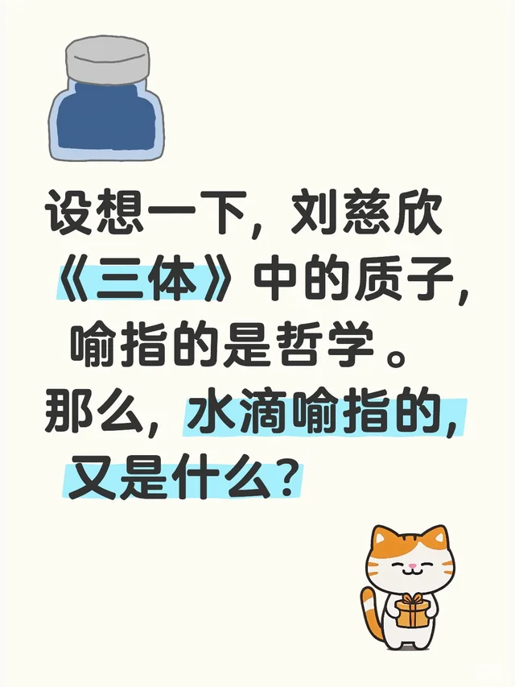

高龄少年
2025-05-07 04:55:47 · 发布
设想一下, 刘慈欣《三体》中的智子, 喻指的是哲学。那么, 水滴喻指的, 又是什么？
❤️ 5
⭐ 1
💬 23
🔗 0
机读数据 data.json
评论 共 23 条 · 14 主评 / 9 回复
高龄少年作者2025-05-24 广东
觉得水滴指知识的载体即”书籍”。三体人用书籍把人类世界给二维了[捂嘴笑R]
隔壁大叔2025-05-31 甘肃
啊？
菠萝菠萝菠萝菠2025-05-07 北京 ♡ 4
为什么质子会想到哲学
高龄少年作者2025-05-07 广东
智子(智慧+离子)与哲学(爱智慧)有点关联好像
菠萝菠萝菠萝菠2025-05-07 北京
在我阅读的进度里边儿还没有出现过智子我还以为你的意思是说人类的哲学被锁死了哈哈哈 这样还挺有意思的
小红薯6A8409682025-05-07 四川
啊哈？[呃R]
高龄少年作者2025-05-07 广东
有种东西叫”闺蜜机”(可以竖起来的扩展屏)不谢
-2025-05-08 广西
闺蜜机？那不是收割机吗？人傻钱多收割机
高龄少年作者2025-05-08 广东
那位在找能竖起来的扩展屏，貌似找不到合适的，其实就是在找闺蜜机
momo2025-05-08 北京 ♡ 4
刘慈欣：我没想到质子是哲学
高龄少年作者2025-05-08 广东
基本正常，定期复诊
TkTk2025-05-21 上海
@刘慈欣？
高龄少年作者2025-05-21 广东
[捂嘴笑R]
一二三2025-05-07 浙江
字能不能先写写对？
高龄少年作者2025-05-07 广东
正常。下一位
95272025-05-08 海南 ♡ 2
毫不相关，不做伪命题的猜测。
一肚子热屁2025-05-23 山西
嗯…刘慈欣没有这么想，二者之间毫无对应关系或相似特征
日落时分2025-05-18 江苏
发了这么多文章11个粉丝
君不见2025-05-08 吉林
水滴神学？
bullet2025-05-08 河北
以柔克刚，水滴石穿，中式哲学思想
小红薯64E358542025-05-07 辽宁 ♡ 1
语文课后遗症。
小红薯60E133A62025-05-07 江西
艺术
不许人间见白头2025-05-18 北京
不要侮辱科幻作品